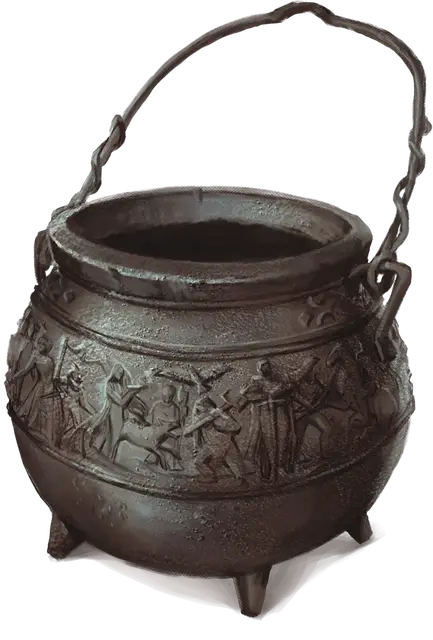

Котёл перерождения
Cauldron of Rebirth
Чудесный предмет, очень редкий (требуется настройка друидом или колдуном)

Рекомендованная стоимость 5 001-50 000 зм
На железных боках этого Крошечного горшка тиснением изображены героические эпизоды. Вы можете использовать котёл в качестве заклинательной фокусировки для ваших заклинаний, и он функционирует как подходящий компонент для заклинания наблюдение [scrying]. Когда вы заканчиваете продолжительный отдых, вы можете создать зелье большого лечения [potion of greater healing] с помощью котла. Зелье теряет свою магию, если не будет использовано в течение 24 часов.
Действием вы можете заставить котёл увеличиться до размеров, достаточных, чтобы Среднее существо могло залезть внутрь. Вы можете действием вернуть котёл к его нормальному размеру, что безвредно выпихнет всё, что не помещается внутри, в ближайшее свободное пространство.
Если вы поместите труп гуманоида в котёл и накроете его 200 фунтами соли (стоящей 10 зм) по крайней мере на 8 часов, соль будет израсходована, а существо вернётся к жизни, как от действия заклинания оживление [raise dead], на следующем рассвете. Это свойство не может быть использовано вновь в течение следующих 7 дней.